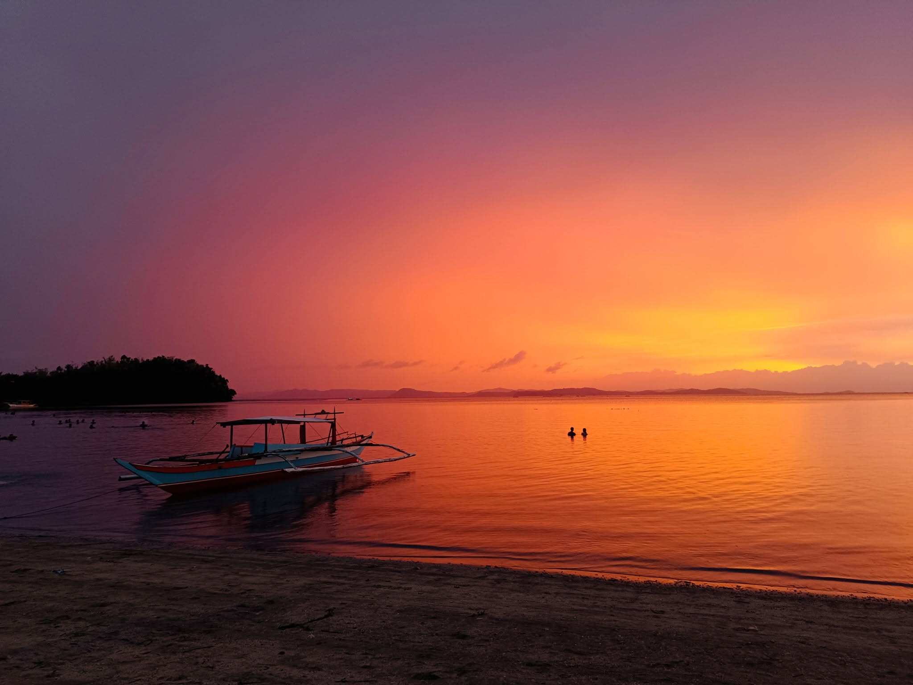

The Historic Heart & Coastal Soul of Samar
Nestled between lush green hills and the calm waters of Maqueda Bay, Catbalogan City blends four centuries of Waray heritage, vibrant festivals, and warm island hospitality.
Four Centuries of Resilience
From a quiet 16th-century coastal settlement to the provincial seat of Samar, Catbalogan's story is etched into its historic plazas, church grounds, and monuments.
- 1596 – Jesuit Founding Established as a mission center under Spanish administration, growing into Samar's primary port and trading town.
- 1930 – The Provincial Capitol The neoclassical Samar Capitol Building rose as a symbol of governance and civic pride in the heart of town.
- 2007 – Cityhood Charter Officially became the City of Catbalogan, stepping into a modern era as Samar's educational and commercial hub.

Where Hills Meet Maqueda Bay
Flanked by steep emerald ridges to the east and the sheltered waters of Maqueda Bay to the west, Catbalogan serves as the natural crossroads of Samar Island.
- Coastal & Island Barangays Includes scenic island communities such as Buri, Darahuway Dako, and Darahuway Guti just minutes by boat.
- Pan-Philippine Highway Link Positioned directly along the Maharlika Highway connecting Northern, Western, and Eastern Samar.
- Vibrant Bayfront Life Daily fishing bancas, bustling morning markets, and golden sunsets define everyday life along the shore.

The City of Captivating Colors
Catbaloganons speak Waray-Waray and are known for warmth, music, craftsmanship, and deep devotion to the sea that sustains the community.
- Manaragat Festival Held every August in honor of St. Bartholomew, celebrating local fisherfolk with vibrant marine street dancing.
- Culinary Heritage Home to treasured recipes like savory pork Tamalos, fresh Maqueda blue crabs, and legacy Corioso pastries.
- Artisanal Craft Celebrated for colorful handwoven tikog grass mats, shellcraft, and community-made souvenirs.

Practical Visitor Guide
Quick answers to help you plan a smooth, enjoyable stay in Catbalogan City.
Ready to Experience Catbalogan?
Browse islands, waterfalls, heritage sites, and local delicacies to start building your personalized Samar itinerary.